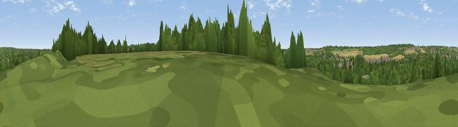

Viewpoint near Hill End
#42027 in England · top 59% of its area beats it · near Hill EndThe view, rendered

A 360° render of this exact spot computed from the terrain model, tree cover and land cover — summer colours, afternoon light, calibrated against photographs of famous viewpoints. Real trees, hedges and buildings will differ in detail.
The panorama
Grey silhouette: terrain skyline in each direction (720 bearings, Earth curvature and refraction included). Dashed green: skyline with trees (+15 m) and buildings (+8 m) as obstacles. Blue strip: how far the ground is visible on each bearing.
Where the view opens
Wedge length = distance to the farthest visible ground on that bearing (vegetation-aware). Rings at 10, 25 and 50 km.
What fills the view
56% woodland · 15% grassland · 14% water · 9% built-up · 5% cropland
Angular shares of the visible panorama (visual magnitude), not map area. Landscape diversity 0.56 (0–1 Shannon).
Key numbers
More beautiful places nearby
The staircase of upgrades: each row has a higher view potential than everything closer. Driving times are estimates from straight-line distance, calibrated against real road routing — check an actual route before setting out.
| Place | Direction | Drive | Score |
|---|---|---|---|
| Viewpoint near Harefield | S · 3 km | ~6 min | 29.9 |
| Batchworth Heath | E · 3 km | ~8 min | 38.5 |
| Viewpoint near South Harefield | SSE · 6 km | ~12 min | 43.7 |
| Viewpoint near Hayes End | SSE · 11 km | ~21 min | 48.1 |
| Harrow on the Hill | ESE · 12 km | ~22 min | 60.7 |
| Viewpoint near Wendover | NW · 22 km | ~37 min | 67.6 |
| Viewpoint near Tring Station | NNW · 23 km | ~38 min | 68.5 |
| Viewpoint near Halton | NW · 23 km | ~38 min | 74.3 |
51.62544, -0.49068 · source: screening · position refined by local search. Computed location — check access rights before visiting.